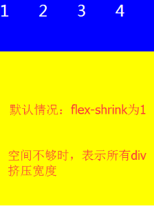

1.垂直
2.水平
3.垂直反向
4.水平反向
5.挤压效果:适应屏幕宽度(即使设置了每个子模块宽度为屏幕宽度的40%，但是依旧会重新计算摆成一行)
6.挤压效果:宽度不够自动换行(适应设置的真实宽度)
7.挤压效果:宽度不够自动换行(适应设置的真实宽度，换行，并且第一行在容器最下方)
8.flex-flow 是flex-direction和flex-wrap的缩写形式，默认值为：flex-flow: row wrap
9.延主轴方向从起始点到终点依次对齐(主轴为水平方向从左到右)
10.延主轴方向从终点到起始点依次对齐(主轴为水平方向从左到右)
11.延主轴方向居中对齐(主轴为水平方向从左到右)
12.延主轴方向两端对齐，项目之间的间隔都相等。(开头和最后的项目，与父容器边缘没有间隔)(主轴为水平方向从左到右)
13.延主轴方向每个项目两侧的间隔相等。所以，项目之间的间隔比项目与边框的间隔大一倍。(开头和最后的项目，与父容器边缘有一定的间隔)(主轴为水平方向从左到右)
14.align_items:flex-start(default)
这里需要明白一个的概念:
因为默认的flex-direction是row,即主轴方向为水平从左到右
那么交叉轴就是与主轴垂直的那条轴，方向为从上到下；
同理，如果设置主轴方向水平从右到左，那么交叉轴的方向就是垂直从下到上.
如此:
flex-start：交叉轴的起点对齐。
flex-end：交叉轴的终点对齐。
center：交叉轴的中点对齐。
baseline: 项目的第一行文字的基线对齐。(文字的行高、字体大小会影响每行的基线)
stretch（默认值）：如果项目未设置高度或设为auto，将占满整个容器的高度。
15.align_items:flex-end
16.align_items:center
16.align_items:baseline
17.align_items:stretch
这里的交叉轴方向为垂直从上到下，所以当子模块的高度设置为auto或者不设高度时
就会自动拉伸到父容器高度
18.align_content:center
与交叉轴的中点对齐
align_content和align_items的用法类似，不过:
正因如此，它比align_items多了space的两个属性
part10
part11
part12
part13
19.align_content:flex-start
与交叉轴的起点对齐
part10
part11
part12
part13
20.align_content:flex-end
与交叉轴的终点对齐
part10
part11
part12
part13
21.align_content:space_between
与交叉轴两端对齐，轴线之间的间隔平均分布
part10
part11
part12
part13
21.align_content:space_around
每根轴线两侧的间隔都相等。所以，轴线之间的间隔比轴线与边框的间隔大一倍。
stretch（默认值）：轴线占满整个交叉轴
part10
part11
part12
part13
22.align_self:flex-end
align_self是子模块单独设置自己的布局位置的属性
下面这个例子，父布局是要求子模块水平从左到右居顶部排列，然后第二个子模块自己单独设置居于底部
part14
part15
part16
part17
part18
23.排序order
order属性定义项目的排列顺序。数值越小，排列越靠前，默认为0
part14
part15
part16
part17
part18
24.权重flex-grow
需要注意:
子模块的宽度（或者高度，取决于父布局方向）不能为百分比，必须是实际的
子模块的默认flex-grow是0，意思就是不设置权重，以自身的实际值为准
下面这个例子:
part14,part16没设置，就是默认0，就是取实际宽度
part15，part18设置2，part17设置3，因此，宽度计算方式为:
part14
part15
part16
part17
part18
25.权重flex-shrink

26.flex-basis